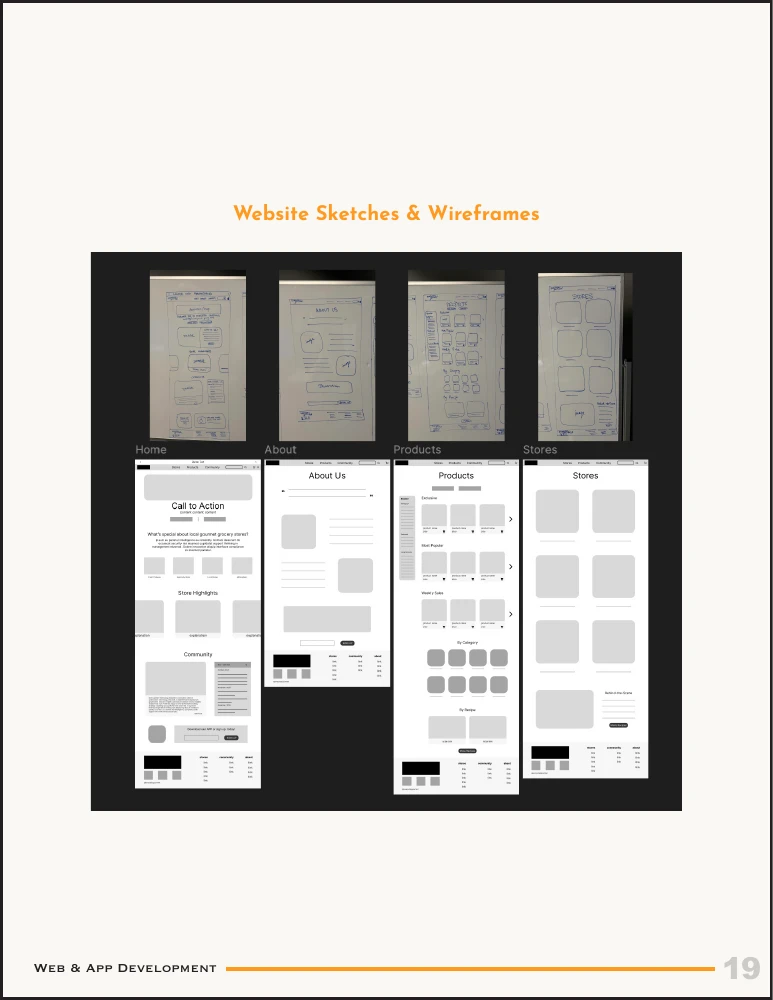
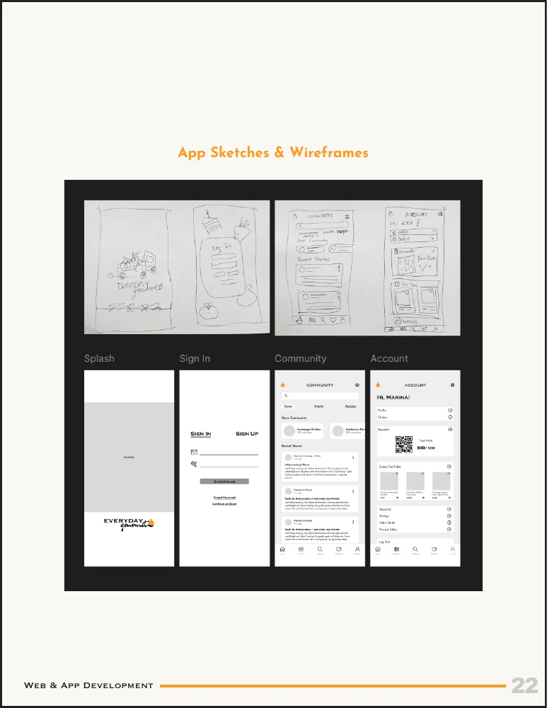
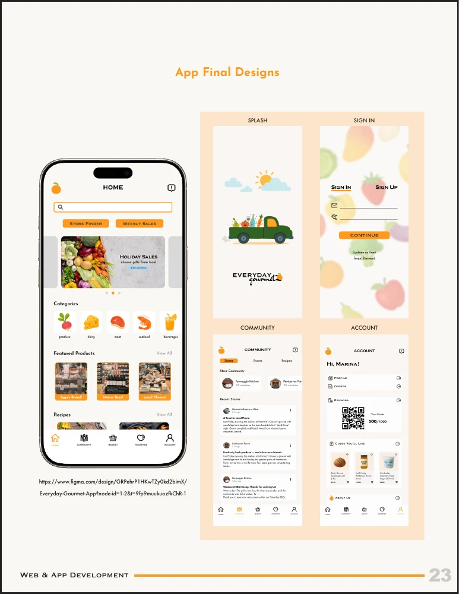

Everyday Gourmet
Finding a little more joy in the everyday grocery run.
Connecting neighborhood kitchens with local specialty groceries and fresh harvest deliveries.
RETAIL APP // RESPONSIVE WEB // 2025Formaggio Kitchen
Artisanal cheeses, natural wines, and daily baked sourdough provisions.
The starting point
I began with an idea about local farm produce. Visiting grocery stores in Cambridge changed the direction: the handwritten signs, specialty goods, and conversations in the aisles were what made these places feel special.
Everyday Gourmet became a concept for helping young professionals and families discover that side of grocery shopping.
One idea, two experiences
The website is a place to discover stores, products, and their stories. The app explores a more everyday relationship: finding community posts, saving things of interest, and keeping up with local food culture.
I developed the identity alongside the interfaces, using warm orange and green, playful produce illustrations, and a mix of structured and handwritten typography.




What stayed with me
Defining what each platform was for made the design process clearer. The visual details became easier to resolve once the content and purpose had a structure.
An academic design concept for Design Strategy and Software II. These are design explorations and prototypes, rather than a launched grocery service.